import pandas as pd
import seaborn as sns
import matplotlib.pyplot as plt
import numpy as np
import missingno as msnoindia=pd.read_csv("/Users/sheebamoghal/Downloads/india.csv")
russia=pd.read_csv("/Users/sheebamoghal/Downloads/russia.csv")
china=pd.read_csv("/Users/sheebamoghal/Downloads/china.csv")
brazil=pd.read_csv("/Users/sheebamoghal/Downloads/brazil.csv")
southafrica=pd.read_csv("/Users/sheebamoghal/Downloads/southafrica.csv")
stacked_df = pd.concat([india, russia, china, brazil, southafrica])
pd.save
year adj_NNI_g adj_NNI_c adj_savings_fix_cap_GNI \
0 1979 11.978544 2.476830e+11 8.055168
1 1980 -2.572689 2.413109e+11 8.393346
2 1981 1.626264 2.452352e+11 8.819348
3 1982 11.562099 2.735896e+11 8.419293
adj_savings_edu_GNI adj_NNS_GNI curr_acc_bal ex_imp_gdp ex_imp_growth \
0 2.600000 6.418183 -0.958069 6.139551 5.237330
1 2.600000 7.373027 -1.394549 5.936027 -0.816934
2 3.051058 7.043158 -1.257273 5.983300 6.020508
3 3.153437 7.024774 -0.887438 5.837629 -0.914918
ex_debt_shocks ... cpi inflation real_interest_rate \
0 11.096107 ... 9.737409 11.346073 4.476508
1 11.615484 ... 11.014232 13.112547 5.118237
2 13.467614 ... 11.883336 7.890743 7.774707
3 14.101651 ... 13.293660 11.868081 7.320987
lending_interest_rate life_exp_birth expense_gdp interest_payments \
0 16.5 53.611 11.702478 13.780033
1 16.5 54.175 11.376034 14.073244
2 16.5 54.732 11.959873 15.563031
3 16.5 55.281 12.077793 17.460567
military expenditure year.1 labels
0 3.133781 1979.0 High Growth
1 3.186248 1980.0 High Growth
2 3.345118 1981.0 Moderate Growth
3 3.323069 1982.0 Very High Growth
[4 rows x 36 columns]
year adj_NNI_g adj_NNI_c adj_savings_fix_cap_GNI \
0 1979 11.978544 2.476830e+11 8.055168
1 1980 -2.572689 2.413109e+11 8.393346
2 1981 1.626264 2.452352e+11 8.819348
3 1982 11.562099 2.735896e+11 8.419293
adj_savings_edu_GNI adj_NNS_GNI curr_acc_bal ex_imp_gdp ex_imp_growth \
0 2.600000 6.418183 -0.958069 6.139551 5.237330
1 2.600000 7.373027 -1.394549 5.936027 -0.816934
2 3.051058 7.043158 -1.257273 5.983300 6.020508
3 3.153437 7.024774 -0.887438 5.837629 -0.914918
ex_debt_shocks ... cpi inflation real_interest_rate \
0 11.096107 ... 9.737409 11.346073 4.476508
1 11.615484 ... 11.014232 13.112547 5.118237
2 13.467614 ... 11.883336 7.890743 7.774707
3 14.101651 ... 13.293660 11.868081 7.320987
lending_interest_rate life_exp_birth expense_gdp interest_payments \
0 16.5 53.611 11.702478 13.780033
1 16.5 54.175 11.376034 14.073244
2 16.5 54.732 11.959873 15.563031
3 16.5 55.281 12.077793 17.460567
military expenditure year.1 labels
0 3.133781 1979 High Growth
1 3.186248 1980 High Growth
2 3.345118 1981 Moderate Growth
3 3.323069 1982 Very High Growth
[4 rows x 36 columns]stacked_df.isna().sum()year 0
adj_NNI_g 0
adj_NNI_c 0
adj_savings_fix_cap_GNI 0
adj_savings_edu_GNI 0
adj_NNS_GNI 0
curr_acc_bal 0
ex_imp_gdp 0
ex_imp_growth 0
ex_debt_shocks 0
final_consump_exp_gdp 34
final_consump_exp_growth 0
fdi_net_inflows 0
fdi_net_outflows 0
gdp_growth 0
gdp_per_capita_growth 0
gener_govt_fin_consump_exp 0
gni_growth 0
goods_exp_bop 0
goods_imp_bop 34
imports_goods_services_gdp 0
imports_goods_services_growth 0
services_gdp 0
services_growth 0
short_term_debt_tot_reserves 34
trade_gdp 0
cpi 0
inflation 0
real_interest_rate 0
lending_interest_rate 0
life_exp_birth 0
expense_gdp 0
interest_payments 0
military expenditure 0
year.1 50
labels 11
dtype: int64stacked_df.dtypesyear int64
adj_NNI_g float64
adj_NNI_c float64
adj_savings_fix_cap_GNI float64
adj_savings_edu_GNI float64
adj_NNS_GNI float64
curr_acc_bal float64
ex_imp_gdp float64
ex_imp_growth float64
ex_debt_shocks float64
final_consump_exp_gdp float64
final_consump_exp_growth float64
fdi_net_inflows float64
fdi_net_outflows float64
gdp_growth float64
gdp_per_capita_growth float64
gener_govt_fin_consump_exp float64
gni_growth float64
goods_exp_bop float64
goods_imp_bop float64
imports_goods_services_gdp float64
imports_goods_services_growth float64
services_gdp float64
services_growth float64
short_term_debt_tot_reserves float64
trade_gdp float64
cpi float64
inflation float64
real_interest_rate float64
lending_interest_rate float64
life_exp_birth float64
expense_gdp float64
interest_payments float64
military expenditure float64
year.1 float64
labels object
dtype: object# normalise the data
from sklearn.preprocessing import StandardScaler
import pandas as pd
numerical_columns = stacked_df.select_dtypes(include=['float64', 'int64']).columns
scaler = StandardScaler()
df_standardized = pd.DataFrame(scaler.fit_transform(stacked_df[numerical_columns]), columns=numerical_columns)
stacked_df[df_standardized.columns] = df_standardized
print(stacked_df) year adj_NNI_g adj_NNI_c adj_savings_fix_cap_GNI \
0 -1.647859 1.230366 -0.584186 0.270892
1 -1.572340 -1.216110 -0.587317 0.313510
2 -1.496821 -0.510146 -0.585389 0.367195
3 -1.421301 1.160350 -0.571455 0.316780
4 -1.345782 -0.472199 -0.568965 0.362786
.. ... ... ... ...
45 -0.364032 2.527897 -0.512882 1.759849
46 -0.288513 -0.118473 -0.505246 -0.224029
47 -0.212994 -1.870050 -0.518213 -1.539088
48 -0.137474 2.674116 -0.479613 1.894557
49 -0.061955 3.005168 -0.428619 2.160723
adj_savings_edu_GNI adj_NNS_GNI curr_acc_bal ex_imp_gdp ex_imp_growth \
0 -0.277537 -0.052004 -1.431497 -0.575405 0.419580
1 -0.277537 0.103127 -1.461364 -0.595831 -0.481153
2 -0.277537 0.049534 -1.451971 -0.591086 0.536099
3 -0.277537 0.046547 -1.426664 -0.605706 -0.495731
4 -0.277537 0.058430 -1.440478 -0.560968 0.726138
.. ... ... ... ... ...
45 -0.277537 -0.518910 0.515624 -2.052646 0.024080
46 -0.277537 -0.518910 0.168654 -2.220329 -0.390300
47 -0.277537 -0.518910 0.016460 -2.339903 -0.355711
48 -0.277537 -0.518732 0.646093 -0.322323 1.376085
49 -0.277537 -0.518555 1.173862 0.855100 2.240148
ex_debt_shocks ... cpi inflation real_interest_rate \
0 -1.270470 ... -0.233992 -0.710643 -1.482124
1 -1.204634 ... -0.201048 -0.685047 -1.448189
2 -0.969857 ... -0.178623 -0.760710 -1.307713
3 -0.889487 ... -0.142234 -0.703079 -1.331706
4 -0.708319 ... -0.113700 -0.754506 -1.298597
.. ... ... ... ... ...
45 0.628001 ... -0.501653 0.205699 0.815326
46 0.457744 ... -0.443525 -0.375942 0.780130
47 1.280590 ... -0.577392 0.927162 1.230426
48 2.801555 ... -0.427215 0.961900 1.950714
49 2.908093 ... -0.302204 -0.056144 1.882002
lending_interest_rate life_exp_birth expense_gdp interest_payments \
0 -0.845342 -0.112698 -0.121526 -2.585569
1 -0.845342 -0.110878 -0.141348 -2.568657
2 -0.845342 -0.109081 -0.105898 -2.482726
3 -0.845342 -0.107310 -0.098738 -2.373275
4 -0.845342 -0.105584 -0.034063 -2.283824
.. ... ... ... ...
45 -0.979266 -0.131598 -0.824782 0.418079
46 -0.953380 -0.238025 0.064149 0.466798
47 -0.897663 -0.196331 0.358975 0.485889
48 -0.677325 -0.009030 -1.982792 0.425465
49 -0.578051 -0.218548 -1.416990 0.396709
military expenditure year.1 labels
0 -0.167829 -1.808466 High Growth
1 -0.151690 -1.729441 High Growth
2 -0.102821 -1.650415 Moderate Growth
3 -0.109603 -1.571390 Very High Growth
4 -0.080748 -1.492364 Moderate Growth
.. ... ... ...
45 0.023742 -0.465034 Low Growth
46 0.110872 -0.386009 Low Growth
47 -0.291221 -0.306983 Low Growth
48 -0.186438 -0.227958 Very High Growth
49 -0.114537 -0.148933 Moderate Growth
[206 rows x 36 columns]stacked_df = stacked_df.dropna()stacked_df.isna().sum()year 0
adj_NNI_g 0
adj_NNI_c 0
adj_savings_fix_cap_GNI 0
adj_savings_edu_GNI 0
adj_NNS_GNI 0
curr_acc_bal 0
ex_imp_gdp 0
ex_imp_growth 0
ex_debt_shocks 0
final_consump_exp_gdp 0
final_consump_exp_growth 0
fdi_net_inflows 0
fdi_net_outflows 0
gdp_growth 0
gdp_per_capita_growth 0
gener_govt_fin_consump_exp 0
gni_growth 0
goods_exp_bop 0
goods_imp_bop 0
imports_goods_services_gdp 0
imports_goods_services_growth 0
services_gdp 0
services_growth 0
short_term_debt_tot_reserves 0
trade_gdp 0
cpi 0
inflation 0
real_interest_rate 0
lending_interest_rate 0
life_exp_birth 0
expense_gdp 0
interest_payments 0
military expenditure 0
year.1 0
labels 0
dtype: int64stacked_df.drop(columns='year')| adj_NNI_g | adj_NNI_c | adj_savings_fix_cap_GNI | adj_savings_edu_GNI | adj_NNS_GNI | curr_acc_bal | ex_imp_gdp | ex_imp_growth | ex_debt_shocks | final_consump_exp_gdp | ... | cpi | inflation | real_interest_rate | lending_interest_rate | life_exp_birth | expense_gdp | interest_payments | military expenditure | year.1 | labels | |
|---|---|---|---|---|---|---|---|---|---|---|---|---|---|---|---|---|---|---|---|---|---|
| 0 | 1.230366 | -0.584186 | 0.270892 | -0.277537 | -0.052004 | -1.431497 | -0.575405 | 0.419580 | -1.270470 | 2.105233 | ... | -0.233992 | -0.710643 | -1.482124 | -0.845342 | -0.112698 | -0.121526 | -2.585569 | -0.167829 | -1.808466 | High Growth |
| 1 | -1.216110 | -0.587317 | 0.313510 | -0.277537 | 0.103127 | -1.461364 | -0.595831 | -0.481153 | -1.204634 | 2.049838 | ... | -0.201048 | -0.685047 | -1.448189 | -0.845342 | -0.110878 | -0.141348 | -2.568657 | -0.151690 | -1.729441 | High Growth |
| 2 | -0.510146 | -0.585389 | 0.367195 | -0.277537 | 0.049534 | -1.451971 | -0.591086 | 0.536099 | -0.969857 | 2.035450 | ... | -0.178623 | -0.760710 | -1.307713 | -0.845342 | -0.109081 | -0.105898 | -2.482726 | -0.102821 | -1.650415 | Moderate Growth |
| 3 | 1.160350 | -0.571455 | 0.316780 | -0.277537 | 0.046547 | -1.426664 | -0.605706 | -0.495731 | -0.889487 | 2.045585 | ... | -0.142234 | -0.703079 | -1.331706 | -0.845342 | -0.107310 | -0.098738 | -2.373275 | -0.109603 | -1.571390 | Very High Growth |
| 4 | -0.472199 | -0.568965 | 0.362786 | -0.277537 | 0.058430 | -1.440478 | -0.560968 | 0.726138 | -0.708319 | 2.023954 | ... | -0.113700 | -0.754506 | -1.298597 | -0.845342 | -0.105584 | -0.034063 | -2.283824 | -0.080748 | -1.492364 | Moderate Growth |
| ... | ... | ... | ... | ... | ... | ... | ... | ... | ... | ... | ... | ... | ... | ... | ... | ... | ... | ... | ... | ... | ... |
| 45 | 2.527897 | -0.512882 | 1.759849 | -0.277537 | -0.518910 | 0.515624 | -2.052646 | 0.024080 | 0.628001 | -0.581674 | ... | -0.501653 | 0.205699 | 0.815326 | -0.979266 | -0.131598 | -0.824782 | 0.418079 | 0.023742 | -0.465034 | Low Growth |
| 46 | -0.118473 | -0.505246 | -0.224029 | -0.277537 | -0.518910 | 0.168654 | -2.220329 | -0.390300 | 0.457744 | -0.713473 | ... | -0.443525 | -0.375942 | 0.780130 | -0.953380 | -0.238025 | 0.064149 | 0.466798 | 0.110872 | -0.386009 | Low Growth |
| 47 | -1.870050 | -0.518213 | -1.539088 | -0.277537 | -0.518910 | 0.016460 | -2.339903 | -0.355711 | 1.280590 | -0.636601 | ... | -0.577392 | 0.927162 | 1.230426 | -0.897663 | -0.196331 | 0.358975 | 0.485889 | -0.291221 | -0.306983 | Low Growth |
| 48 | 2.674116 | -0.479613 | 1.894557 | -0.277537 | -0.518732 | 0.646093 | -0.322323 | 1.376085 | 2.801555 | -0.338714 | ... | -0.427215 | 0.961900 | 1.950714 | -0.677325 | -0.009030 | -1.982792 | 0.425465 | -0.186438 | -0.227958 | Very High Growth |
| 49 | 3.005168 | -0.428619 | 2.160723 | -0.277537 | -0.518555 | 1.173862 | 0.855100 | 2.240148 | 2.908093 | -0.393170 | ... | -0.302204 | -0.056144 | 1.882002 | -0.578051 | -0.218548 | -1.416990 | 0.396709 | -0.114537 | -0.148933 | Moderate Growth |
195 rows × 35 columns
stacked_df.describe<bound method NDFrame.describe of year adj_NNI_g adj_NNI_c adj_savings_fix_cap_GNI \
0 -1.647859 1.230366 -0.584186 0.270892
1 -1.572340 -1.216110 -0.587317 0.313510
2 -1.496821 -0.510146 -0.585389 0.367195
3 -1.421301 1.160350 -0.571455 0.316780
4 -1.345782 -0.472199 -0.568965 0.362786
.. ... ... ... ...
45 -0.364032 2.527897 -0.512882 1.759849
46 -0.288513 -0.118473 -0.505246 -0.224029
47 -0.212994 -1.870050 -0.518213 -1.539088
48 -0.137474 2.674116 -0.479613 1.894557
49 -0.061955 3.005168 -0.428619 2.160723
adj_savings_edu_GNI adj_NNS_GNI curr_acc_bal ex_imp_gdp ex_imp_growth \
0 -0.277537 -0.052004 -1.431497 -0.575405 0.419580
1 -0.277537 0.103127 -1.461364 -0.595831 -0.481153
2 -0.277537 0.049534 -1.451971 -0.591086 0.536099
3 -0.277537 0.046547 -1.426664 -0.605706 -0.495731
4 -0.277537 0.058430 -1.440478 -0.560968 0.726138
.. ... ... ... ... ...
45 -0.277537 -0.518910 0.515624 -2.052646 0.024080
46 -0.277537 -0.518910 0.168654 -2.220329 -0.390300
47 -0.277537 -0.518910 0.016460 -2.339903 -0.355711
48 -0.277537 -0.518732 0.646093 -0.322323 1.376085
49 -0.277537 -0.518555 1.173862 0.855100 2.240148
ex_debt_shocks ... cpi inflation real_interest_rate \
0 -1.270470 ... -0.233992 -0.710643 -1.482124
1 -1.204634 ... -0.201048 -0.685047 -1.448189
2 -0.969857 ... -0.178623 -0.760710 -1.307713
3 -0.889487 ... -0.142234 -0.703079 -1.331706
4 -0.708319 ... -0.113700 -0.754506 -1.298597
.. ... ... ... ... ...
45 0.628001 ... -0.501653 0.205699 0.815326
46 0.457744 ... -0.443525 -0.375942 0.780130
47 1.280590 ... -0.577392 0.927162 1.230426
48 2.801555 ... -0.427215 0.961900 1.950714
49 2.908093 ... -0.302204 -0.056144 1.882002
lending_interest_rate life_exp_birth expense_gdp interest_payments \
0 -0.845342 -0.112698 -0.121526 -2.585569
1 -0.845342 -0.110878 -0.141348 -2.568657
2 -0.845342 -0.109081 -0.105898 -2.482726
3 -0.845342 -0.107310 -0.098738 -2.373275
4 -0.845342 -0.105584 -0.034063 -2.283824
.. ... ... ... ...
45 -0.979266 -0.131598 -0.824782 0.418079
46 -0.953380 -0.238025 0.064149 0.466798
47 -0.897663 -0.196331 0.358975 0.485889
48 -0.677325 -0.009030 -1.982792 0.425465
49 -0.578051 -0.218548 -1.416990 0.396709
military expenditure year.1 labels
0 -0.167829 -1.808466 High Growth
1 -0.151690 -1.729441 High Growth
2 -0.102821 -1.650415 Moderate Growth
3 -0.109603 -1.571390 Very High Growth
4 -0.080748 -1.492364 Moderate Growth
.. ... ... ...
45 0.023742 -0.465034 Low Growth
46 0.110872 -0.386009 Low Growth
47 -0.291221 -0.306983 Low Growth
48 -0.186438 -0.227958 Very High Growth
49 -0.114537 -0.148933 Moderate Growth
[195 rows x 36 columns]># Visual Data Representation# Histogramsfig, ax = plt.subplots()
ax.hist(india["inflation"], bins=30, alpha=0.5, label='India')
ax.hist(china["inflation"], bins=30, alpha=0.5, label='China')
ax.hist(russia["inflation"], bins=30, alpha=0.5, label='Russia')
ax.hist(brazil["inflation"], bins=30, alpha=0.5, label='Brazil')
ax.hist(southafrica["inflation"], bins=30, alpha=0.5, label='South Africa')
ax.set_xlabel('Inflation')
ax.set_ylabel('Percentage')
ax.set_title('BRICS')
ax.legend()
plt.show()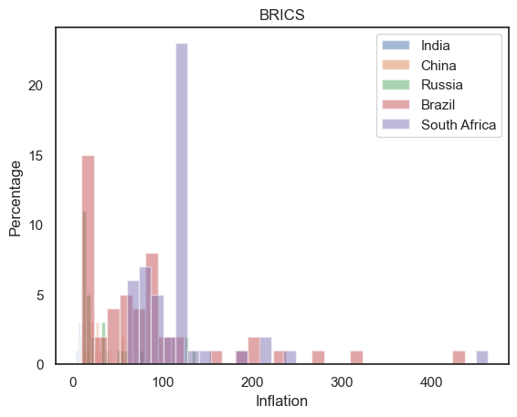
# Scatterplotsfig= plt.figure(figsize=(18, 9))
fig.suptitle('Trade Analysis')
ax1= fig.add_subplot(331)
ax1.set_title('India')
ax1.plot(india['year'],
india['trade_gdp'],
color='blue')
ax2= fig.add_subplot(332)
ax2.set_title('China')
ax2.plot(china['year'],
china['trade_gdp'],
color='brown')
ax3= fig.add_subplot(333)
ax3.set_title('Russia')
ax3.plot(russia['year'],
russia['trade_gdp'],
color='pink')
ax4= fig.add_subplot(334)
ax4.set_title('South Africa')
ax4.plot(southafrica['year'],
southafrica['trade_gdp'],
color='pink')
ax5= fig.add_subplot(335)
ax5.set_title('Brazil')
ax5.plot(brazil['year'],
brazil['trade_gdp'],
color='orange')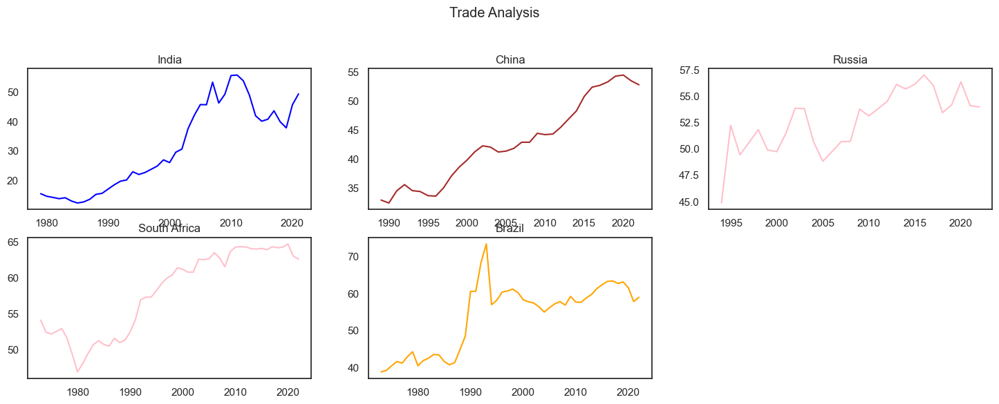
# Create a Matplotlib figure and axis
fig, ax = plt.subplots(figsize=(10, 6))
# Create a boxplot for all numerical columns in the DataFrame
india.boxplot(ax=ax)
# Add labels and a title
ax.set_ylabel('Value')
ax.set_title('India')
# Show the plot
plt.xticks(rotation=45)
plt.show()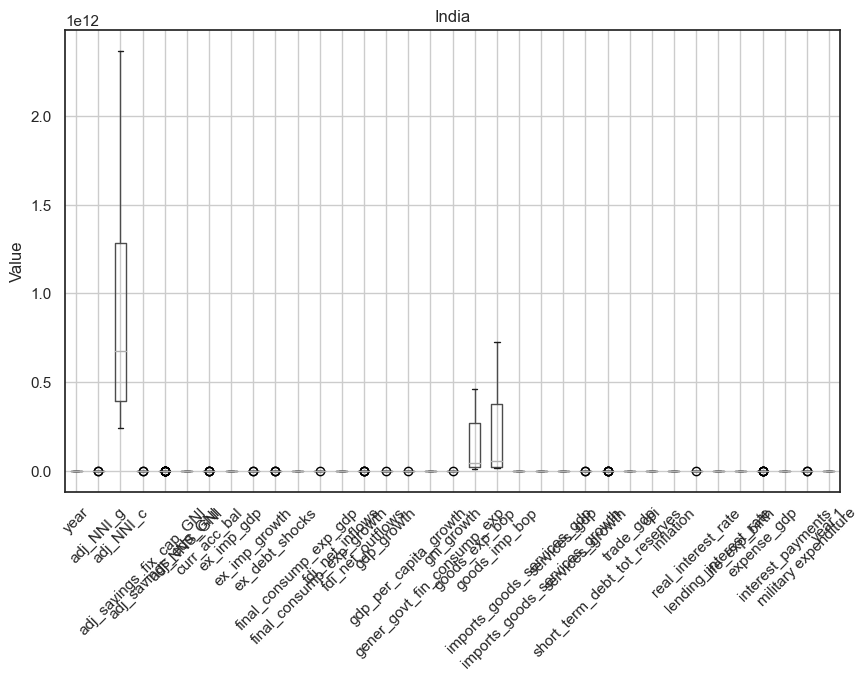
fig, ax = plt.subplots(figsize=(10, 6))
russia.boxplot(ax=ax)
ax.set_ylabel('Value')
ax.set_title('Russia')
plt.xticks(rotation=90)
plt.show()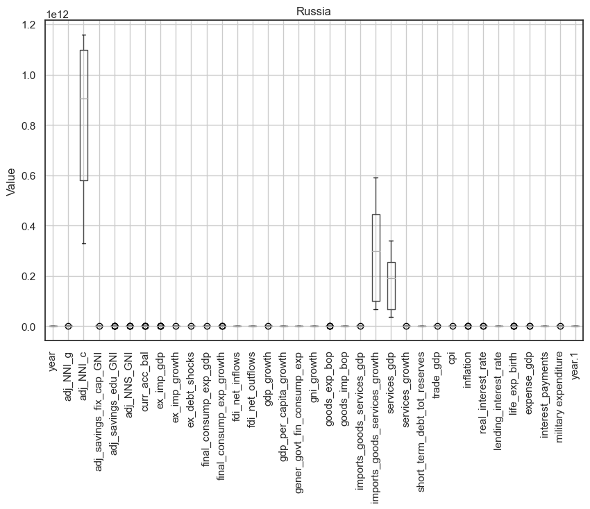
fig, ax = plt.subplots(figsize=(10, 6))
china.boxplot(ax=ax)
ax.set_ylabel('Value')
ax.set_title('China')
plt.xticks(rotation=90)
plt.show()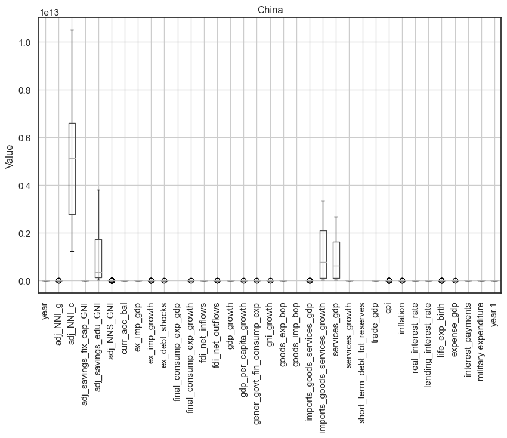
fig, ax = plt.subplots(figsize=(10, 6))
southafrica.boxplot(ax=ax)
ax.set_ylabel('Value')
ax.set_title('South Africa')
plt.xticks(rotation=90)
plt.show()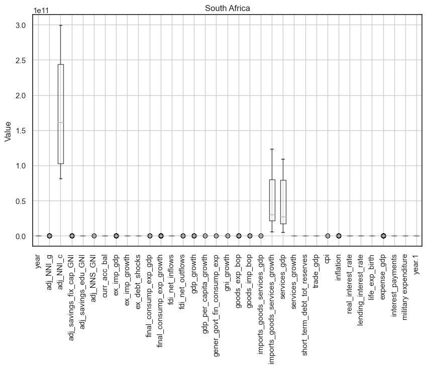
fig, ax = plt.subplots(figsize=(10, 6))
brazil.boxplot(ax=ax)
ax.set_ylabel('Value')
ax.set_title('Brazil')
plt.xticks(rotation=90)
plt.show()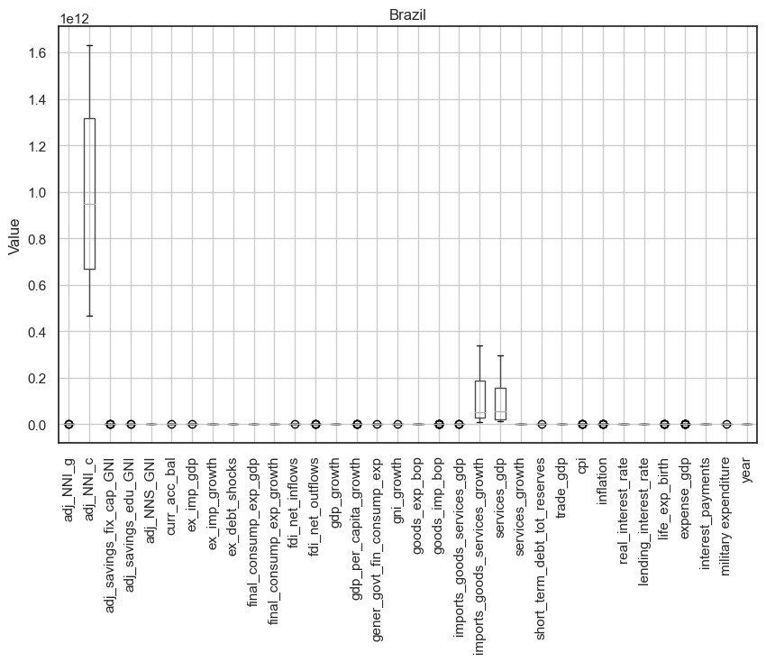
sns.set_theme(style="white")
corr = india.corr(numeric_only=True) #Computing correlation matrix
mask = np.triu(np.ones_like(corr, dtype=bool))
f, ax = plt.subplots(figsize=(7, 5))
cmap = sns.diverging_palette(230, 20, as_cmap=True)
sns.heatmap(corr, mask=mask, cmap=cmap, vmax=.3, center=0,
square=True, linewidths=.5, cbar_kws={"shrink": .5})
plt.show()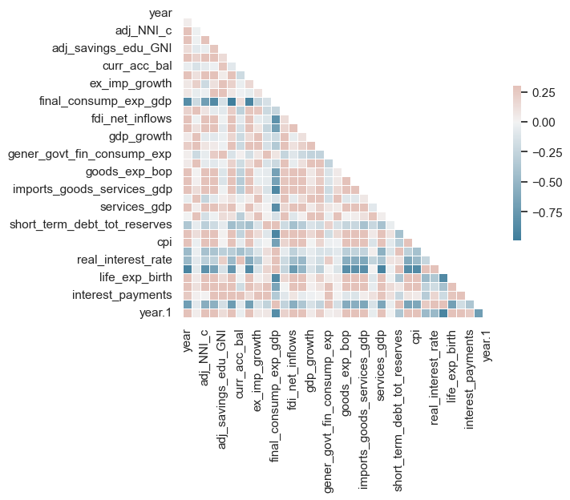
sns.set_theme(style="white")
corr = china.corr(numeric_only=True) #Computing correlation matrix
mask = np.triu(np.ones_like(corr, dtype=bool))
f, ax = plt.subplots(figsize=(7, 5))
cmap = sns.diverging_palette(230, 20, as_cmap=True)
sns.heatmap(corr, mask=mask, cmap=cmap, vmax=.3, center=0,
square=True, linewidths=.5, cbar_kws={"shrink": .5})
plt.show()
sns.set_theme(style="white")
corr = russia.corr(numeric_only=True) #Computing correlation matrix
mask = np.triu(np.ones_like(corr, dtype=bool))
f, ax = plt.subplots(figsize=(7, 5))
cmap = sns.diverging_palette(230, 20, as_cmap=True)
sns.heatmap(corr, mask=mask, cmap=cmap, vmax=.3, center=0,
square=True, linewidths=.5, cbar_kws={"shrink": .5})
plt.show()
sns.set_theme(style="white")
corr = southafrica.corr(numeric_only=True) #Computing correlation matrix
mask = np.triu(np.ones_like(corr, dtype=bool))
f, ax = plt.subplots(figsize=(7, 5))
cmap = sns.diverging_palette(230, 20, as_cmap=True)
sns.heatmap(corr, mask=mask, cmap=cmap, vmax=.3, center=0,
square=True, linewidths=.5, cbar_kws={"shrink": .5})
plt.show()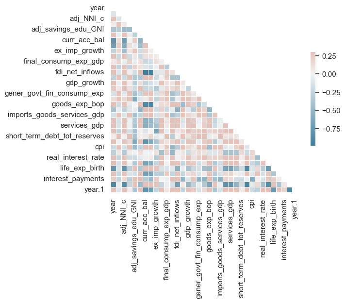
sns.set_theme(style="white")
corr = brazil.corr(numeric_only=True) #Computing correlation matrix
mask = np.triu(np.ones_like(corr, dtype=bool))
f, ax = plt.subplots(figsize=(7, 5))
cmap = sns.diverging_palette(230, 20, as_cmap=True)
sns.heatmap(corr, mask=mask, cmap=cmap, vmax=.3, center=0,
square=True, linewidths=.5, cbar_kws={"shrink": .5})
plt.show()
fig, axes = plt.subplots(1, 5, figsize=(15, 5))
sns.scatterplot(data=india, x="year", y="adj_NNI_g", hue='cpi', ax=axes[0])
axes[0].set_title('India')
sns.scatterplot(data=russia, x="year", y="adj_NNI_g", hue='cpi', ax=axes[1])
axes[1].set_title('Russia')
sns.scatterplot(data=china, x="year", y="adj_NNI_g", hue='cpi', ax=axes[2])
axes[2].set_title('China')
sns.scatterplot(data=brazil, x="year", y="adj_NNI_g", hue='cpi', ax=axes[3])
axes[3].set_title('Brazil')
sns.scatterplot(data=southafrica, x="year", y="adj_NNI_g", hue='cpi', ax=axes[4])
axes[4].set_title('South Africa')
plt.tight_layout()
plt.show()
sns.scatterplot(data=china, x="year", y="adj_NNI_g", hue='cpi')<Axes: xlabel='year', ylabel='adj_NNI_g'>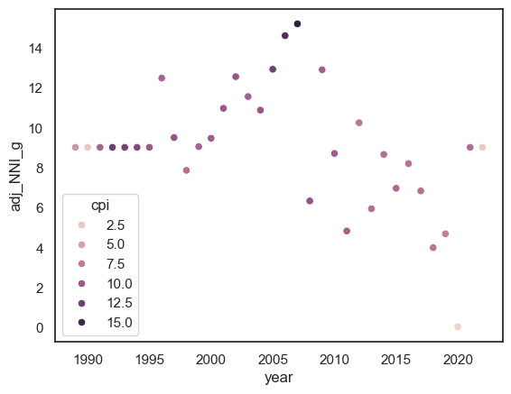
sns.scatterplot(data=southafrica, x="year", y="adj_NNI_g", hue='cpi')<Axes: xlabel='year', ylabel='adj_NNI_g'>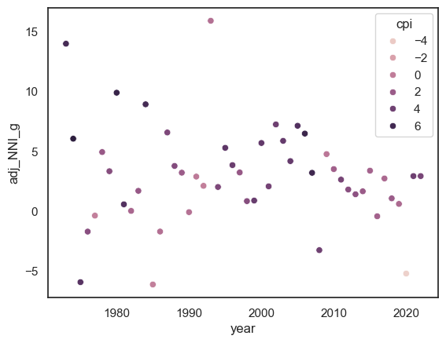
sns.violinplot(x="labels", y="gni_growth", data=india,palette='rainbow')<Axes: xlabel='labels', ylabel='gni_growth'>
fig, axes = plt.subplots(1, 5, figsize=(15, 5))
sns.violinplot(x="labels", y="gni_growth", data=india, ax=axes[0])
axes[0].set_title('India')
sns.violinplot(x="labels", y="gni_growth", data=russia, ax=axes[1])
axes[1].set_title('Russia')
sns.violinplot(x="labels", y="gni_growth", data=china, ax=axes[2])
axes[2].set_title('China')
sns.violinplot(x="labels", y="gni_growth", data=brazil, ax=axes[3])
axes[3].set_title('Brazil')
sns.violinplot(x="labels", y="gni_growth", data=southafrica, ax=axes[4])
axes[4].set_title('South Africa')
for ax in axes:
ax.set_xticklabels(ax.get_xticklabels(), rotation=90)
plt.tight_layout()
plt.show()/var/folders/cm/1bq_zvw92w99j_5d1p5jq5v40000gn/T/ipykernel_41653/980302243.py:13: UserWarning: FixedFormatter should only be used together with FixedLocator
ax.set_xticklabels(ax.get_xticklabels(), rotation=90)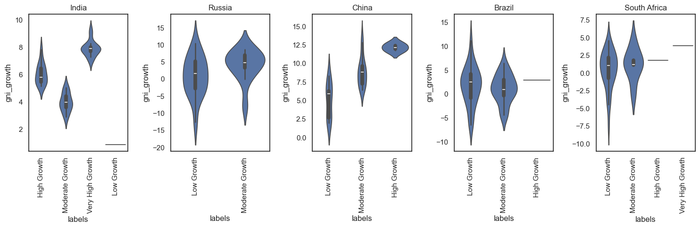
# links used
# https://towardsdatascience.com/data-visualization-using-matplotlib-16f1aae5ce70
# https://nbviewer.org/github/BadreeshShetty/Data-Visualization-using-Matplotlib/blob/master/%281%29Histograms.ipynb# finding correlations - top 10 and bottom 10
corr = stacked_df.corr()
positive_corr = corr[corr > 0].stack().sort_values(ascending=True).head(10)
print("Top 10 Positive Correlations:")
print(positive_corr)
negative_corr = corr[corr < 0].stack().sort_values(ascending=True).head(10)
print("\nTop 10 Negative Correlations:")
print(negative_corr)Top 10 Positive Correlations:
services_growth ex_imp_growth 0.002156
ex_imp_growth services_growth 0.002156
year fdi_net_inflows 0.004391
fdi_net_inflows year 0.004391
year.1 0.004391
year.1 fdi_net_inflows 0.004391
expense_gdp fdi_net_outflows 0.008516
fdi_net_outflows expense_gdp 0.008516
adj_savings_fix_cap_GNI trade_gdp 0.010122
trade_gdp adj_savings_fix_cap_GNI 0.010122
dtype: float64
Top 10 Negative Correlations:
fdi_net_inflows final_consump_exp_gdp -0.951428
final_consump_exp_gdp fdi_net_inflows -0.951428
adj_savings_edu_GNI gener_govt_fin_consump_exp -0.940114
gener_govt_fin_consump_exp adj_savings_edu_GNI -0.940114
imports_goods_services_growth final_consump_exp_gdp -0.932700
final_consump_exp_gdp imports_goods_services_growth -0.932700
services_gdp final_consump_exp_gdp -0.926872
final_consump_exp_gdp services_gdp -0.926872
curr_acc_bal -0.899807
curr_acc_bal final_consump_exp_gdp -0.899807
dtype: float64correlation_threshold = 0.8 # Adjust as needed
negative_correlation_threshold = -0.8 # Adjust as needed
columns_to_drop = set()
for i in range(len(corr.columns)):
for j in range(i):
if abs(corr.iloc[i, j]) > correlation_threshold or corr.iloc[i, j] < negative_correlation_threshold:
colname = corr.columns[i]
columns_to_drop.add(colname)
stacked_df_dropped = stacked_df.drop(columns=columns_to_drop)
print(stacked_df_dropped)
# saving the file
#csv_file='../data/stackeddf.csv'
#stacked_df_dropped.to_csv(csv_file, index=False) year adj_NNI_g adj_savings_fix_cap_GNI adj_savings_edu_GNI \
0 -1.647859 1.230366 0.270892 -0.277537
1 -1.572340 -1.216110 0.313510 -0.277537
2 -1.496821 -0.510146 0.367195 -0.277537
3 -1.421301 1.160350 0.316780 -0.277537
4 -1.345782 -0.472199 0.362786 -0.277537
.. ... ... ... ...
45 -0.364032 2.527897 1.759849 -0.277537
46 -0.288513 -0.118473 -0.224029 -0.277537
47 -0.212994 -1.870050 -1.539088 -0.277537
48 -0.137474 2.674116 1.894557 -0.277537
49 -0.061955 3.005168 2.160723 -0.277537
adj_NNS_GNI ex_imp_growth ex_debt_shocks fdi_net_outflows gdp_growth \
0 -0.052004 0.419580 -1.270470 -0.842531 1.595002
1 0.103127 -0.481153 -1.204634 -0.842808 1.304262
2 0.049534 0.536099 -0.969857 -0.842942 0.295912
3 0.046547 -0.495731 -0.889487 -0.842495 1.815392
4 0.058430 0.726138 -0.708319 -0.842596 0.433390
.. ... ... ... ... ...
45 -0.518910 0.024080 0.628001 -1.331112 -0.826727
46 -0.518910 -0.390300 0.457744 -0.144805 -0.610388
47 -0.518910 -0.355711 1.280590 -1.366720 -0.683008
48 -0.518732 1.376085 2.801555 -1.142294 -0.426718
49 -0.518555 2.240148 2.908093 0.553344 -0.678209
short_term_debt_tot_reserves lending_interest_rate life_exp_birth \
0 -0.032164 -0.845342 -0.112698
1 0.403253 -0.845342 -0.110878
2 0.851964 -0.845342 -0.109081
3 1.403674 -0.845342 -0.107310
4 1.517825 -0.845342 -0.105584
.. ... ... ...
45 -0.526985 -0.979266 -0.131598
46 -0.518753 -0.953380 -0.238025
47 -1.369414 -0.897663 -0.196331
48 -1.350293 -0.677325 -0.009030
49 1.010385 -0.578051 -0.218548
expense_gdp military expenditure labels
0 -0.121526 -0.167829 High Growth
1 -0.141348 -0.151690 High Growth
2 -0.105898 -0.102821 Moderate Growth
3 -0.098738 -0.109603 Very High Growth
4 -0.034063 -0.080748 Moderate Growth
.. ... ... ...
45 -0.824782 0.023742 Low Growth
46 0.064149 0.110872 Low Growth
47 0.358975 -0.291221 Low Growth
48 -1.982792 -0.186438 Very High Growth
49 -1.416990 -0.114537 Moderate Growth
[195 rows x 15 columns]Y = stacked_df_dropped['labels']
X = stacked_df_dropped.drop(['labels'],axis =1)
from sklearn.model_selection import train_test_split
X_train, X_test, y_train, y_test = train_test_split(X, Y, random_state=42, test_size=0.2)
x_train_valid, x_valid_test, y_train_valid, y_valid_test = train_test_split(X_test, y_test, test_size=0.5, random_state=0)
# Print the shapes of the datasets
print('Train data : ' + str(X_train.shape))
print('Test data : ' + str(X_test.shape))
print('Train Output : ' + str(y_train.shape))
print('Test Output : ' + str(y_test.shape))
print('Valid Train data : ' + str(x_train_valid.shape))
print('Valid Test data : ' + str(x_valid_test.shape))
print('Valid Train Output : ' + str(y_train_valid.shape))
print('Valid Test Output : ' + str(y_valid_test.shape))
from sklearn import preprocessing
# Assuming Y is your target variable
yop = [str(i) for i in Y] # Convert labels to strings
le = preprocessing.LabelEncoder()
Y_op = le.fit_transform(yop)
# Print the classes learned by the LabelEncoder
print(le.classes_)Train data : (156, 14)
Test data : (39, 14)
Train Output : (156,)
Test Output : (39,)
Valid Train data : (19, 14)
Valid Test data : (20, 14)
Valid Train Output : (19,)
Valid Test Output : (20,)
['High Growth' 'Low Growth' 'Moderate Growth' 'Very High Growth']import pandas as pd
from sklearn.model_selection import train_test_split
from sklearn.naive_bayes import GaussianNB
from sklearn.naive_bayes import MultinomialNB
from sklearn.metrics import accuracy_score, precision_score, recall_score, f1_score, confusion_matrix, ConfusionMatrixDisplaynaive_bayes = GaussianNB()
naive_bayes.fit(X_train, y_train)GaussianNB()In a Jupyter environment, please rerun this cell to show the HTML representation or trust the notebook.
On GitHub, the HTML representation is unable to render, please try loading this page with nbviewer.org.
GaussianNB()
from sklearn.naive_bayes import GaussianNB
from sklearn.metrics import accuracy_score, precision_score, recall_score, f1_score
# Instantiate Gaussian Naive Bayes model
naive_bayes = GaussianNB()
# Train the model on the training set
naive_bayes.fit(X_train, y_train)
# Make predictions on the training, validation, and test sets
pred_train = naive_bayes.predict(X_train)
pred_valid = naive_bayes.predict(x_train_valid)
pred_test = naive_bayes.predict(X_test)
# Function to calculate and print metrics
def print_metrics(y_true, y_pred, set_name):
accuracy = accuracy_score(y_true, y_pred)
precision = precision_score(y_true, y_pred, average='weighted')
recall = recall_score(y_true, y_pred, average='weighted')
f1 = f1_score(y_true, y_pred, average='weighted')
print(f"{set_name} Set Metrics:")
print(f"Accuracy: {accuracy:.4f}")
print(f"Precision: {precision:.4f}")
print(f"Recall: {recall:.4f}")
print(f"F1 Score: {f1:.4f}")
print("\n")
# Print metrics for each set
print_metrics(y_train, pred_train, "Training")
print_metrics(y_train_valid, pred_valid, "Validation")
print_metrics(y_test, pred_test, "Testing")Training Set Metrics:
Accuracy: 0.3013
Precision: 0.5200
Recall: 0.3013
F1 Score: 0.3258
Validation Set Metrics:
Accuracy: 0.4211
Precision: 0.8585
Recall: 0.4211
F1 Score: 0.4842
Testing Set Metrics:
Accuracy: 0.3333
Precision: 0.6312
Recall: 0.3333
F1 Score: 0.3477
ConfusionMatrixDisplay.from_predictions(y_test, pred_test)
ConfusionMatrixDisplay.from_predictions(y_train, pred_train)<sklearn.metrics._plot.confusion_matrix.ConfusionMatrixDisplay at 0x16d653d60>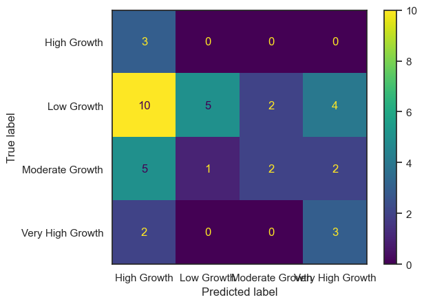
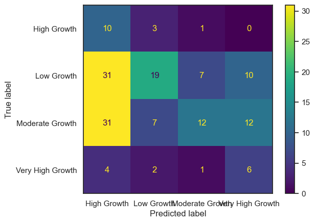
PCA
# Import necessary libraries
import pandas as pd
import numpy as np
import matplotlib.pyplot as plt
from sklearn.decomposition import PCA
from sklearn.manifold import TSNE
from sklearn.preprocessing import StandardScaler, LabelEncoder
from sklearn.metrics import silhouette_score
# PCA
y = stacked_df_dropped['labels']
x = stacked_df_dropped.drop(['labels'], axis=1)
label_encoder = LabelEncoder()
y_encoded = label_encoder.fit_transform(y)
pca1 = PCA()
pca_result = pca1.fit_transform(x)
print(pca_result)[[ 7.62571967e-01 -6.26043200e-01 -2.30866090e-01 ... -3.68266626e-02
-9.43207244e-03 -1.16245306e-12]
[ 1.86852321e+00 -1.42033301e+00 1.23674495e-01 ... 2.85634458e-02
2.13734846e-02 -2.92256509e-13]
[ 1.78069560e+00 -6.75060179e-01 -7.31259179e-01 ... 5.53506048e-03
2.15628745e-03 -1.56201244e-12]
...
[ 2.00350774e+00 -3.63942297e+00 -1.87451963e+00 ... 1.76194346e-01
-2.61901427e-02 3.58566126e-12]
[ 5.11008136e-02 -1.05869012e+00 -2.55586066e+00 ... 7.92424281e-02
-4.88649412e-02 -7.00349518e-12]
[ 6.30703303e-01 1.25498085e+00 -2.37715116e+00 ... 1.25566938e-02
-1.50273539e-02 2.09843682e-12]]evr= pca1.explained_variance_ratio_
cum_var = np.cumsum(pca1.explained_variance_ratio_)
optimal = np.argmax(cum_var >= 0.75) + 1
print("Optimal Number of Components:", optimal)
plt.figure(figsize=(10, 6))
plt.plot(range(1, len(cum_var) + 1 ), cum_var, linestyle='--')
plt.xlabel('Components')
plt.ylabel('Explained Variance Ratio (cumulative)')
plt.title('Scree Plot')
plt.grid()
plt.show()Optimal Number of Components: 4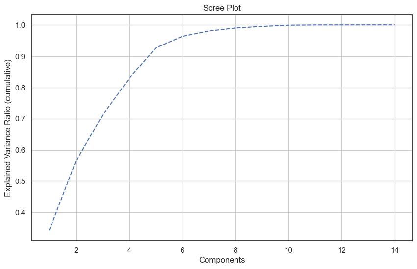
# pca with optimal components
pca2 = PCA(n_components=4)
pca_optimal2 = pca2.fit_transform(x)
evr2 = pca2.explained_variance_ratio_
cev2 = np.cumsum(evr2)
print(pca_optimal2[0:10])[[ 0.76257197 -0.6260432 -0.23086609 -2.59040608]
[ 1.86852321 -1.42033301 0.1236745 -1.00166474]
[ 1.7806956 -0.67506018 -0.73125918 -0.66213051]
[ 1.73581487 0.08114664 0.88863619 -2.10613841]
[ 1.91751146 -0.02151058 -0.62973654 -0.38327002]
[ 2.71648514 -0.68755858 1.03310853 -0.8007282 ]
[ 1.97349223 0.24045813 -0.25631107 -0.67853068]
[ 1.42712716 0.85358937 -0.9723162 -0.45607911]
[ 1.35839281 1.90954496 0.73221295 -1.18362437]
[ 1.94311949 2.67844446 0.0827333 0.30600975]]pcadf = pd.DataFrame(data=pca_optimal2, index=x.index, columns= ['PC1','PC2', 'PC3','PC4'])
pcadf.head(10)| PC1 | PC2 | PC3 | PC4 | |
|---|---|---|---|---|
| 0 | 0.762572 | -0.626043 | -0.230866 | -2.590406 |
| 1 | 1.868523 | -1.420333 | 0.123674 | -1.001665 |
| 2 | 1.780696 | -0.675060 | -0.731259 | -0.662131 |
| 3 | 1.735815 | 0.081147 | 0.888636 | -2.106138 |
| 4 | 1.917511 | -0.021511 | -0.629737 | -0.383270 |
| 5 | 2.716485 | -0.687559 | 1.033109 | -0.800728 |
| 6 | 1.973492 | 0.240458 | -0.256311 | -0.678531 |
| 7 | 1.427127 | 0.853589 | -0.972316 | -0.456079 |
| 8 | 1.358393 | 1.909545 | 0.732213 | -1.183624 |
| 9 | 1.943119 | 2.678444 | 0.082733 | 0.306010 |
print("Explained Variance Ratio for Each Component:")
print(evr2*100)
print("\nCumulative Explained Variance:")
print(cev2*100)
e = pca2.explained_variance_ratio_
# Print overall explained variance ratio
print("Overall Explained Variance Ratio:", sum(e)*100)
from sklearn.metrics import silhouette_samples
sil_val = silhouette_samples(pca_optimal2, y)
print(sil_val[0:10])
avg_sil_score = np.mean(sil_val)
print(f"Average Silhouette Score for PCA: {avg_sil_score}")
Explained Variance Ratio for Each Component:
[34.22972792 22.08761959 14.72048604 11.766315 ]
Cumulative Explained Variance:
[34.22972792 56.31734751 71.03783355 82.80414855]
Overall Explained Variance Ratio: 82.80414854824095
[-0.07892657 -0.02874872 -0.09320622 -0.16876901 -0.11519626 0.04725516
-0.13561769 -0.0658181 -0.15181648 0.02498319]
Average Silhouette Score for PCA: -0.09704378288837297
plt.figure(figsize=(10, 6))
plt.plot(range(1, len(e) + 1), cev2, marker='o', linestyle='--')
plt.xlabel('Number of Components')
plt.ylabel('Cumulative Explained Variance')
plt.title('Scree Plot')
plt.grid()
plt.show()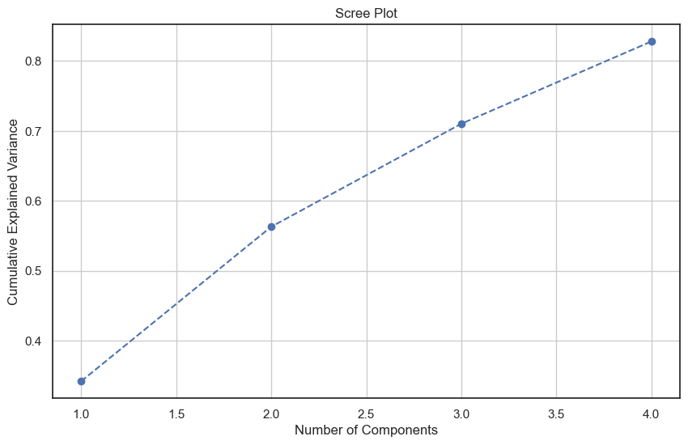
plt.figure(figsize=(10, 10))
for label_value in y.unique():
indices = y == label_value
plt.scatter(pca_optimal2[indices, 0], pca_optimal2[indices, 1], label=label_value, alpha=0.5, cmap='viridis')
plt.xlabel('Principal Component 1')
plt.ylabel('Principal Component 2')
plt.title('Reduced-Dimensional Data with PCA')
plt.legend()
plt.show()/var/folders/cm/1bq_zvw92w99j_5d1p5jq5v40000gn/T/ipykernel_41653/1286041017.py:5: UserWarning: No data for colormapping provided via 'c'. Parameters 'cmap' will be ignored
plt.scatter(pca_optimal2[indices, 0], pca_optimal2[indices, 1], label=label_value, alpha=0.5, cmap='viridis')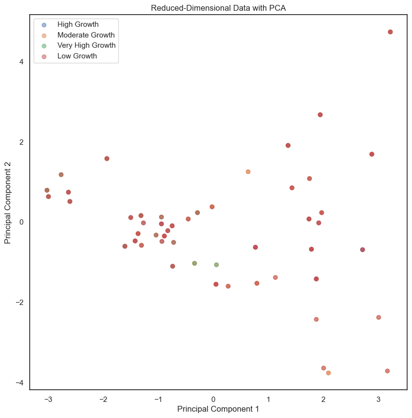
# t-sne
perplex_values = [1, 2, 3, 4, 5, 10, 15, 20, 25, 30, 35, 40, 45, 50, 55, 60, 100]
for p in perplex_values:
tsne = TSNE(n_components=2, perplexity=p, random_state=2339)
X = tsne.fit_transform(x)
avg = silhouette_score(X, y)
print(f"Perplexity {p}: Silhouette Score = {avg}")Perplexity 1: Silhouette Score = -0.08198484778404236
Perplexity 2: Silhouette Score = -0.055559705942869186
Perplexity 3: Silhouette Score = -0.06099412217736244
Perplexity 4: Silhouette Score = -0.06829451769590378
Perplexity 5: Silhouette Score = -0.0636918768286705
Perplexity 10: Silhouette Score = -0.06911653280258179
Perplexity 15: Silhouette Score = -0.09194755554199219
Perplexity 20: Silhouette Score = -0.08281858265399933
Perplexity 25: Silhouette Score = -0.08434560894966125
Perplexity 30: Silhouette Score = -0.0772019475698471
Perplexity 35: Silhouette Score = -0.09676646441221237
Perplexity 40: Silhouette Score = -0.11943919956684113
Perplexity 45: Silhouette Score = -0.06866727024316788
Perplexity 50: Silhouette Score = -0.1278223693370819
Perplexity 55: Silhouette Score = -0.09298355877399445
Perplexity 60: Silhouette Score = -0.08441784232854843
Perplexity 100: Silhouette Score = -0.0959368422627449# Try a viz of perplexity values
val = [2, 50, 100]
# Create subplots to compare t-SNE results with different perplexities
plt.figure(figsize=(15, 5))
for i, p in enumerate(val, 1):
tsne = TSNE(n_components=3, perplexity=p, random_state=2339)
X_tsne = tsne.fit_transform(x)
plt.subplot(1, len(val), i)
plt.scatter(X_tsne[:, 0], X_tsne[:, 1], c=y_encoded, cmap='viridis', alpha=0.5)
plt.title(f't-SNE with Perplexity {p}')
plt.xlabel('t-SNE Component 1')
plt.ylabel('t-SNE Component 2')
plt.tight_layout()
plt.show()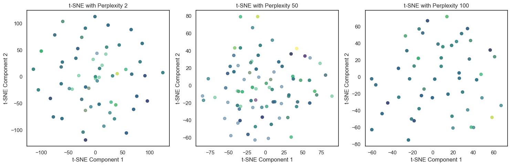
tsne = TSNE(n_components=3, perplexity=2, random_state=42)
X_tsne = tsne.fit_transform(x)
sil_tsne = silhouette_samples(X_tsne, y)
print(sil_tsne[0:10])
avg_tsne_score = np.mean(sil_tsne)
print(f"Average Silhouette Score for t-SNE: {avg_tsne_score}")[ 0.00318419 0.01473387 -0.02172711 -0.16240974 0.00434295 0.08726601
-0.06315608 0.04417509 0.05092624 -0.14183001]
Average Silhouette Score for t-SNE: -0.06379585713148117plt.figure(figsize=(10, 6))
plt.scatter(X_tsne[:, 0], X_tsne[:, 1], c=y_encoded, cmap='viridis', alpha=0.5)
plt.title(f't-SNE with Perplexity {2}')
plt.xlabel('t-SNE Component 1')
plt.ylabel('t-SNE Component 2')
plt.tight_layout()
plt.show()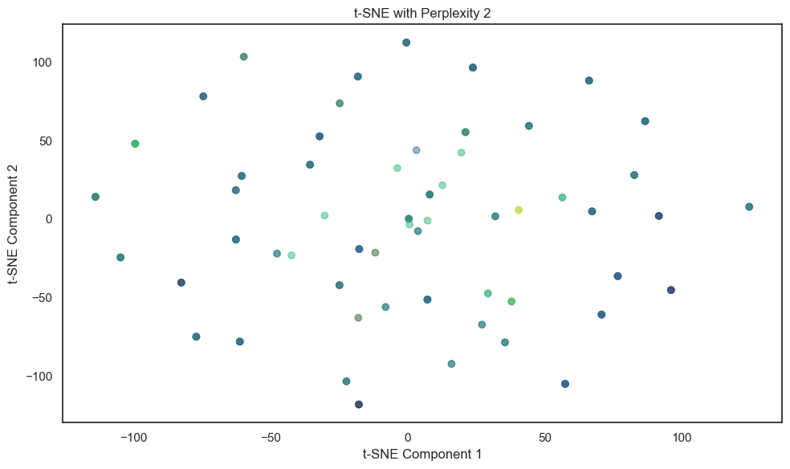
# pca vs tsne
plt.figure(figsize=(15, 6))
plt.subplot(1, 2, 1)
for label_value in y.unique():
indices = y == label_value
plt.scatter(pca_optimal2[indices, 0], pca_optimal2[indices, 1], label=label_value, alpha=0.5, cmap='viridis')
plt.xlabel('Principal Component 1')
plt.ylabel('Principal Component 2')
plt.title('Reduced-Dimensional Data with PCA')
plt.legend()
plt.show()
plt.subplot(1, 2, 2)
for label_value in y.unique():
indices = y == label_value
plt.scatter(X_tsne[indices, 0], X_tsne[indices, 1], label=label_value, alpha=0.5, cmap='viridis')
# Adding legend
plt.legend()
plt.title(f't-SNE with Perplexity {2}')
plt.xlabel('t-SNE Component 1')
plt.ylabel('t-SNE Component 2')
plt.tight_layout()
plt.show()/var/folders/cm/1bq_zvw92w99j_5d1p5jq5v40000gn/T/ipykernel_41653/713093619.py:8: UserWarning: No data for colormapping provided via 'c'. Parameters 'cmap' will be ignored
plt.scatter(pca_optimal2[indices, 0], pca_optimal2[indices, 1], label=label_value, alpha=0.5, cmap='viridis')
/var/folders/cm/1bq_zvw92w99j_5d1p5jq5v40000gn/T/ipykernel_41653/713093619.py:19: UserWarning: No data for colormapping provided via 'c'. Parameters 'cmap' will be ignored
plt.scatter(X_tsne[indices, 0], X_tsne[indices, 1], label=label_value, alpha=0.5, cmap='viridis')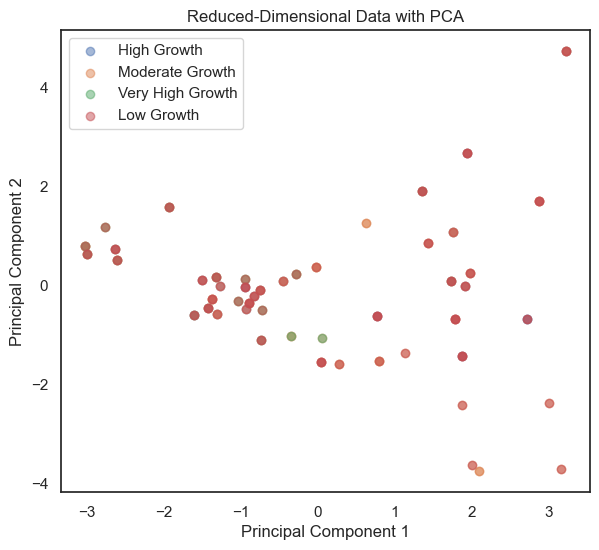
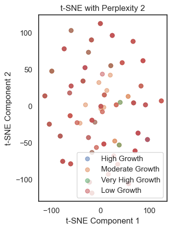
print(f"Average Silhouette Score for t-SNE: {avg_tsne_score}")
print(f"Average Silhouette Score for PCA: {avg_sil_score}")Average Silhouette Score for t-SNE: -0.06379585713148117
Average Silhouette Score for PCA: -0.09704378288837297# t-sne on pca
tsne_on_pca = TSNE(n_components=3, perplexity=2, random_state=42)
tsne_pca = tsne_on_pca.fit_transform(pca_optimal2)
# pca on t-sne
pca_on_tsne = PCA(n_components=3)
pca_tsne = pca_on_tsne.fit_transform(tsne_pca)
# Visualize PCA and t-SNE plots together
plt.figure(figsize=(15, 5))
# orginal pca
plt.subplot(1, 3, 1)
plt.scatter(pca_optimal2[:, 0], pca_optimal2[:, 1], c=y_encoded, cmap='viridis', alpha=0.5)
plt.title('Original PCA')
plt.xlabel('Principal Component 1')
plt.ylabel('Principal Component 2')
# t-sne on pca
plt.subplot(1, 3, 2)
plt.scatter(tsne_pca[:, 0], tsne_pca[:, 1], c=y_encoded, cmap='viridis', alpha=0.5)
plt.title('t-SNE on PCA')
plt.xlabel('t-SNE Component 1')
plt.ylabel('t-SNE Component 2')
# pca on t-sne
plt.subplot(1, 3, 3)
plt.scatter(pca_tsne[:, 0], pca_tsne[:, 1], c=y_encoded, cmap='viridis', alpha=0.5)
plt.title('PCA on t-SNE')
plt.xlabel('Principal Component 1')
plt.ylabel('Principal Component 2')
plt.tight_layout()
plt.show()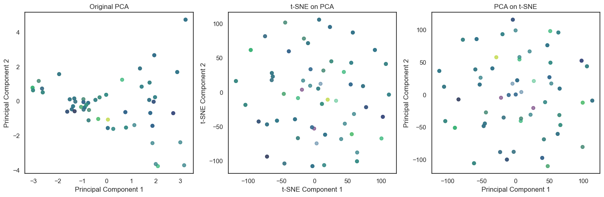